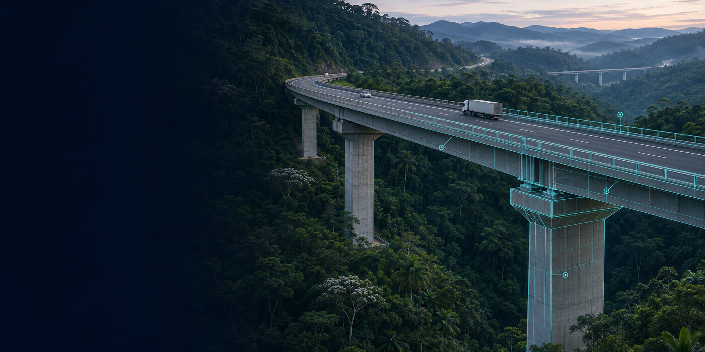

Portfólio acadêmico
Tema da tese de doutorado
Manutenção Proativa Sistêmica de Obras de Arte Especiais
Modelo Integrado com BIM, Inteligência Artificial, AHP-Gaussiano e Custo Baseado no Risco
Doutorado em Engenharia de Transportes
Instituto Militar de Engenharia
Artigo · Drenagem Aplicada à Infraestrutura de Transportes
Manutenção preventiva da drenagem de OAEs
Protótipo orientado a BrIM para priorização e prognóstico
Acervo acadêmico
9 disciplinas · 6 concluídas · 3 em andamento
-
Inteligência Artificial Aplicada aos Transportes
Concluída
PowerPoint · Arquivo não disponível online
-
Avaliação e Decisão de Projetos em Transportes
Concluída
PowerPoint · Arquivo não disponível online
-
Logística
Concluída
PowerPoint · Arquivo não disponível online
-
Problemas Especiais: Ciência de Dados e Aprendizado Profundo aplicados aos Transportes
Concluída
Apresentação web
-
Métodos Estatísticos para Modelos de Transporte
Concluída
Apresentação web
-
Planejamento de Transportes
Concluída
Apresentação web
-
Estruturas para Transporte
Em andamento
Apresentação em preparação
-
Sistema de Transporte Rodoviário
Em andamento
Apresentação em preparação
-
Drenagem Aplicada à Infraestrutura de Transportes
Em andamento
Apresentação final do artigo